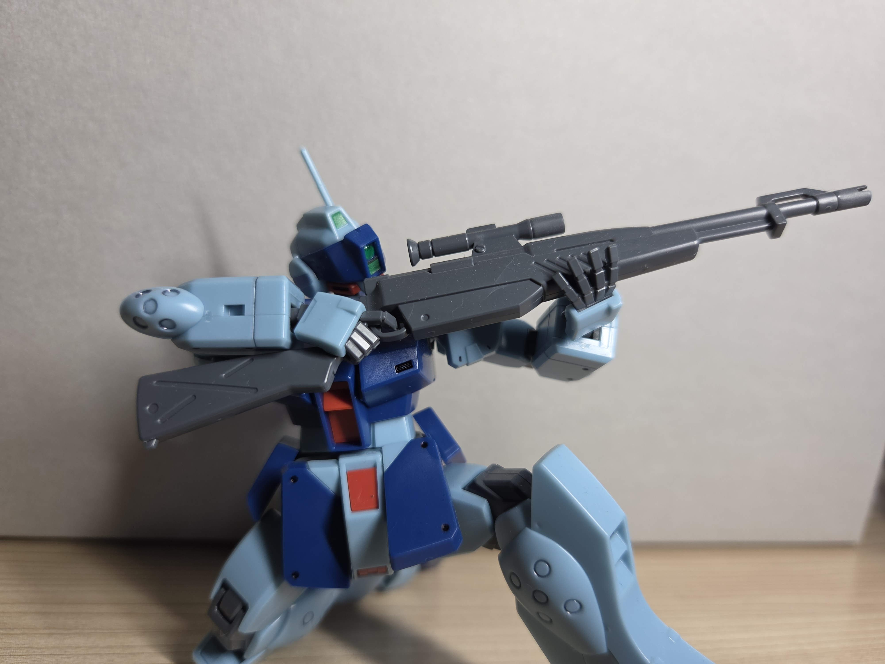
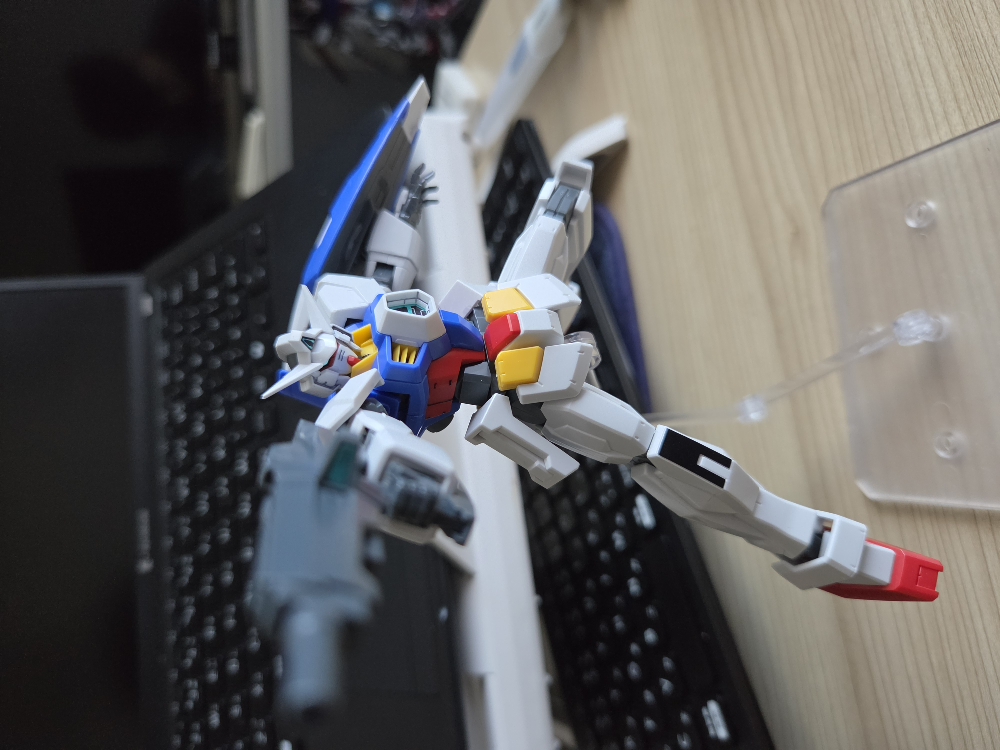

キットの詳細や、作るときのポイントをまとめた個人的なレビューです。 クリックすると見れます。


従来のフレームから可動域が広がり、素材が変更されたことで腕が武器の重さでへたれることがなくなり 様々なポーズを付けられるようになりました。ちなみにガンダムフレームが使用されているガンプラなら移植が可能です。 プレミアムバンダイ限定なので入手しにくいのが難点ですがガンダムバルバトスが好きな人には特におすすめです！
ORIGIN版ならではのミリタリー感溢れる高密度なディテールと、人間の骨格を思わせる異次元の可動ギミックが素組みのままでも完璧に決まる傑作キットです。 唯一、全指可動ハンドの武器保持力だけが惜しいものの、それを補って余りあるプレイバリューと圧倒的な兵器としての説得力を誇っています。前期型と中期型を 選んで組める仕様も含め、まさに「1/100スケールにおけるRX-78の決定版」と言えるキットです!